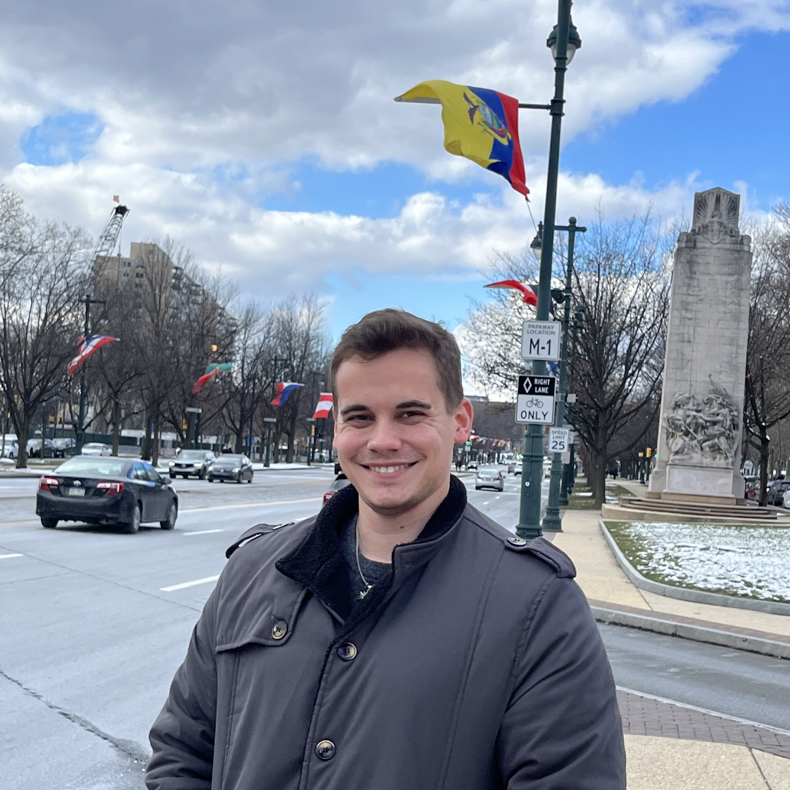

01 // Roc Climber
A custom arcade installation built around a Raspberry Pi, including deployment scripts and a physical arcade interface.
Python / Bash / Raspberry Pi
Computer & embedded software engineering specialist building hardware, software, robotics, and systems that connect the physical and digital worlds.
I am an engineering specialist with a focus on computer engineering, rapid prototyping, and embedded software systems with a background in microcontroller development, mechatronics research, and laboratory management/automation.
I enjoy working at the boundary between software and hardware: designing circuits, bringing up embedded systems, automating repetitive workflows, and turning rough prototypes into reliable systems.
Currently exploring opportunities where I can combine engineering, experimentation, and practical problem solving.

A custom arcade installation built around a Raspberry Pi, including deployment scripts and a physical arcade interface.
Executable scripts for automating laptop tablet system configuration for customer deployments.
A computer-vision and microcontroller based workflow for improving consistency in 3D scanning and prosthetic socket preparation.
An interactive embedded system designed to encode pixel data into audio signals to convert images into music.